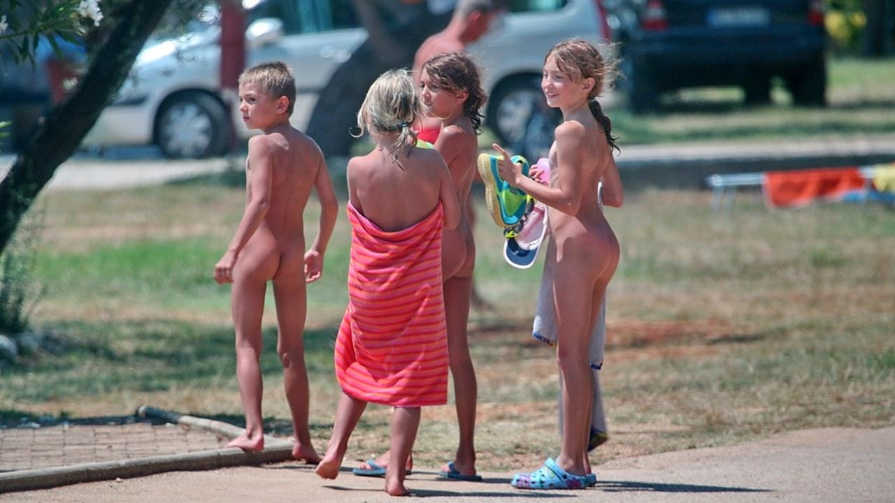

Nearly two hours of cinematic naturist footage set to epic orchestral music.
Footage drawn from feature films, documentaries, and independent productions spanning several decades. Full version includes post-credits scenes. Source films with IMDb links are listed below.
If you like this video you can download full version on Mega hosting, as well as MP3 file.
Verified Sources (IMDb-linked)
The following films and documentaries have been identified as source materials referenced in the Epic Naturist Cinematic compilation.
Epic Naturist Cinematic is a curated compilation project that combines cinematic music with naturist-themed footage sourced from previously released films, documentaries, and publicly available materials.
The project was created as a visual exploration of naturism as a cultural and lifestyle phenomenon — focusing on atmosphere, environment, and the human body in a non-sexualized, natural context. The editing approach emphasizes mood, pacing, and music synchronization rather than narrative.
Originally published on YouTube, the project reached a wide audience and accumulated significant viewership before being discontinued following platform policy changes.
Epic Naturist Cinematic is no longer actively maintained as a YouTube project.
Over time, platform policies regarding nudity — including non-sexual naturist content — became more restrictive. As a result, many videos in this format were removed or limited in visibility.
Due to these changes, continuing the project in its original form was no longer viable. The project is now preserved here as an archive.
This project presents naturist imagery in a non-sexual, cultural, and artistic context.
All materials are used as part of a compilation and editorial work. No ownership over original footage is claimed.
Viewers are responsible for ensuring that accessing this content complies with their local laws and platform policies.
The content presented in this project does not aim to depict or promote sexually explicit material.
All rights to original footage belong to their respective owners.
If you are a copyright holder and would like your content to be credited, modified, or removed, please contact the site owner and appropriate action will be taken.